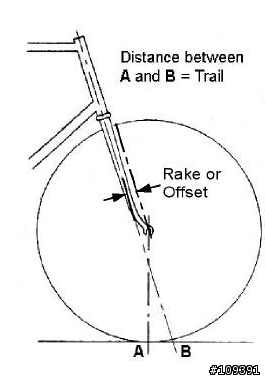

High Speed Shimmy 高速下的虚迷效应（转帖）
转至：http://bbs.biketo.com/thread-127705-1-1.html
虚迷效应
当你正在悠闲的骑车, 对刚换上的轻量化轮组满意的不得了,
在某个陡下坡, 你恣意狂奔, 达到70或甚至80公里的高速,
突然间, 你的前轮开始震动不停, 整台脚踏车剧烈摇晃濒临失控边缘 !
虽然你试着想煞车减速, 但已经吓的六神无主, 你可能是碰上了高速下的 虚迷效应。(High Speed Shimmy)
虚迷效应发生的原因是 轨迹量(trail) 的过短或不足。
什么是轨迹量?
如果你延着头管中心线往下画一条假想线(如图), 会与地面交于一点"B"。
另外前轮与地面的接触点为"A", 则点A到点B的水平距离就是"轨迹量"。 (Trail)

所有我设计制作的车架, 永远保留至少2.5英寸(约6.35公分)的轨迹量。
所有使用轮子的交通工具都有轨迹量的考量, 包括大卖场里的手推车。
头管的角度越陡(越接近垂直线), 表示轨迹量会越少, 因为点B会越靠近点A。 如果你增加前叉末端的弯曲偏移(Fork offset), 也会缩短轨迹量, 如图所示, 前叉末端弯曲幅度越大, 点A会越向点B方向靠近。
虚迷效应的发生
最糟的剧本是一台单车有接近垂直的头管, 又加上大量弯曲下端的前叉, 轨迹量会被缩减到接近0。
轨迹量代表着让单车维持直线前进,以及自体稳定的能力。 当你骑车向左弯时, 点B跟着往左移动, 前轮的点A也转向左边。
滚动的轮子会产生陀螺效应, 也是单车自体稳定中关键的一环, 但那是另一个议题, 在此提及的原因是要指出, 越重的轮胎在滚动时越能让单车保持直线前进。
公路车使用越轻的轮组及轮胎的后遗症是, 只要些微的轨迹变动, 就足以让单车对操控的反应过于灵敏。
虚迷效应的发生, 是在高速下滑时由于路面不平或是侧风的影响, 让轮子产生少许的偏向, 此时轨迹量原本应该会发挥直线稳定的作用, 但如果轨迹量太短, 不足以稳定车身原来的直线路径, 反而导致不停地重复修正补偿, 进而造成前轮开始前后剧烈地晃动。
如果你推着卖场手推车, 快速跑过停车场,你也会看到轮子因为一样的道理不停的剧烈晃动。
-
较大的车架会因为两个原因比较容易发生虚迷效应:
- 大车架照理该有较高的车身与长度, 但是学院派认为公路赛车最好要有短轮距, 所以要求制造者设计较陡的头管, 藉以缩短前后轮距离, 也因为如此而缩短了轨迹量。
- 大车架使用较长的管材, 车身也变得比较有弹性, 为了补偿刻意缩短的轮距, 立管角度必须缩小, 好让坐垫能后掠以容纳车前方骑者的腿长, 这样也造成骑者的重心会偏后落在后轮上方。
避免和处理
不管任何车辆, 只要是重心偏后轮的一定比较不稳, 问问任何一位在侧风中开过VW旧型巴士都知道。
所以, 如果你是属于身高较高并使用大尺寸车架的骑士,而使用的车架又是属于轮距较短, 立管后掠重心位于后轮上方设计的, 在下坡时稍微前移你的重心,并弯腰采取低风阻骑姿, 假如你上半身坐的挺直, 正面胸前的风压会让你的重心更偏往后轮。
最后, 如果真的碰上虚迷效应, 试着不要惊慌, 双膝尽量贴近上管维持稳定, 并轻柔地使用后煞, 直到车身回复稳定后才去用前煞。
一辆会产生虚迷效应的单车通常是车架设计上的缺失, 你对此无能为力除非换车架。 不过检查头碗的轴承是否有松动, 或是搭配略重一点的前胎以增强滚动时的陀螺效应, 多少能修正或减低问题。虽然车架设计已无法去改变, 藉由其他方面的补强, 也许能降低虚迷效应发生的机率。
翻译后话 : 虽然Dave Moulton 已经于1993年退休不再制作车架, 但是他的部落格中仍有许多值得参考的资料与观念, 或许车架锻造及设计日新月异, 但车架几何特性及可能产生的危险仍值得爱好自行车运动的车友注意并了解。 如果译文有词不达意或任何谬误之处, 欢迎先进不吝指正赐教,谢谢
警告:译文纸上谈兵, 目的是为了增进骑车安全, 内容仅做为参考, 请勿为了验证理论是否属实而下坡飙速!!